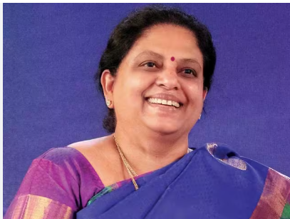

The Missile Women of India
Tessy Thomas is one of India's most distinguished scientists and is popularly known as the "Missile Woman of India." She has played a key role in the development of India's long-range ballistic missile programs and has inspired countless women to pursue careers in science and technology.
Tessy Thomas was born on April 9, 1963, in Alappuzha, Kerala, India. From a young age, she was fascinated by science and mathematics. Her interest in technology and engineering motivated her to pursue higher education in these fields.
She earned a Bachelor's degree in Electrical Engineering from the Government Engineering College, Thrissur. Later, she obtained a Master's degree in Guided Missile Technology and continued her studies in defense-related technologies.
Tessy Thomas joined the Defence Research and Development Organisation (DRDO) in 1988. She worked on several missile development projects and became closely associated with the Agni missile program.
Her contributions were particularly significant in the development of the Agni-IV and Agni-V missiles. Through her dedication, technical expertise, and leadership, she became one of the leading figures in India's missile technology initiatives.
Throughout her career, Tessy Thomas has received numerous awards and honors for her contributions to science and national defense. She is widely respected as a pioneer for women in engineering and aerospace research.
Tessy Thomas's journey demonstrates the power of determination, education, and innovation. Her achievements have not only strengthened India's defense capabilities but have also encouraged young women to break barriers in traditionally male-dominated fields.
Tessy Thomas is a symbol of excellence in science and technology. Her remarkable contributions to missile development and her commitment to innovation continue to inspire future generations of engineers and scientists.